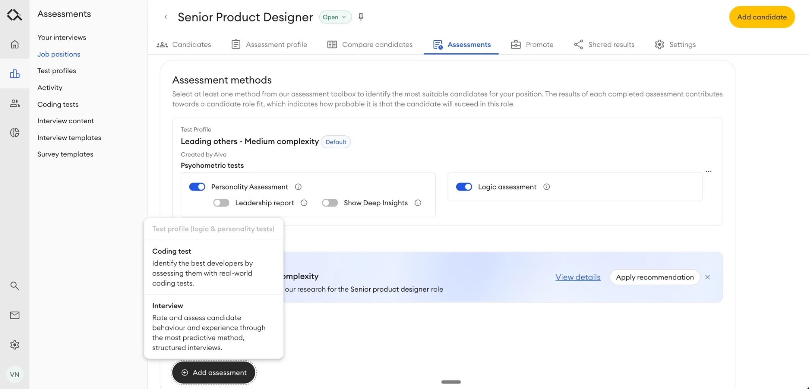

01.
Hiring system pivot
- When
- April 2026
- Role
- Design lead
- For
- Recruiter platform
Business goals
Take meaningful steps into taking a share of the ATS market in addition to being an assessment provider.
User goals
Users are able to use a single platform to create evidence-based assessment plans, assess candidates, manage a complex hiring project, and ensure a good candidate experience
Context
Alva Labs is a key player in the recruitment landscape in Sweden when it comes to the psychometrics (logic + personality) tests with more than 1.5M candidates having completed the tests. At the time, recruiters were using Alva to manage the psychometric assessments and to create interview scorecards. However, in large organisations, they still had to use an ATS to manage all the admin around a hiring process. With the increasing use of the interviews feature and the scientific validity of structured hiring processes, it was the next step for the business to enable the full hiring process management to create greater engagement with the Alva platform and ensure efficient, scientific hiring.
This was a massive company-wide initiative to define the required feature set for this pivot, then research, design and build it. All teams also had to come together to identify how this product would be packaged and presented to customers. Since we were working at a very high velocity with aggressive timelines, setting up close feedback channels with customers and adding tracking events to all the functionality was critical to ensure that we could iterate and adapt the features.

April 2026
Lightning strike
The first version of the full hiring system went live in April 2026.
Key functionality
- Kanban board for managing candidates
- Job creation flow where the recruiter is assisted through a setup flow
- Automations on the kanban board
- Candidate communications
- Job position templates
- Screening for readiness
My role
Ensure a high-quality delivery where all the pieces fit together seamlessly, with intuitive user flows that meet users’ jobs to be done.
Lead a redesign of the navigation. Usage data showed clear problems with the existing navigation, and it was outdated. A relaunch of this size was the right moment to change it across all versions of the platform.
Work with marketing and an external studio to make sure the story we told on the website and in our marketing materials matched the big changes we were making in the product.
Run smaller experiments on interaction patterns, so we could learn from them and use what we found to guide future feature decisions.
Outcomes
Many Hiring System customers converted, with more than 2x open sales conversations ongoing
Updated Nov 2026